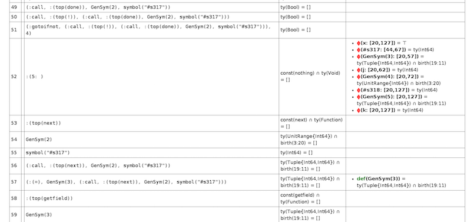
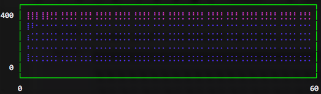
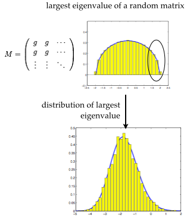
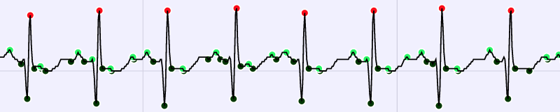
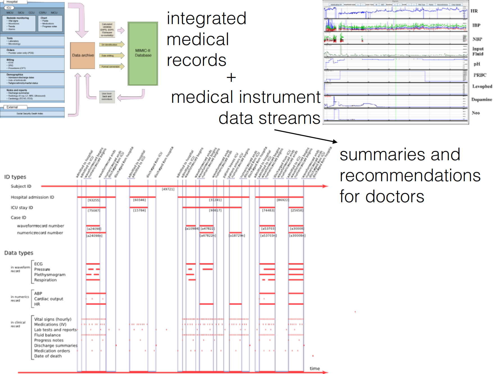

Research areas
The Julia group researches new approaches to designing flexible, yet performant software tools and libraries that address the evolving needs of data science applications.
Algorithm development
Compiler technologies for high level dynamic languages

Scientific computing has historically suffered from the two-language problem, sometimes called Ousterhoult's dichotomy. Users write prototype programs in a high level language such as Matlab, Python or R, then reimplement them in lower level languages like C/C++, Fortran, or even assembly, to have performant implementations. Julia is a programming language designed to bridge the gap between flexibility and performance, allowing its users to be more productive.
Current research in the Julia group focuses on how the Julia compiler can be improved to further improve the flexibility-performance trade-off. We are interested in efforts to adopt state of the art technologies for compiled languages, and tailoring these analyses for Julia, a high level dynamic language. Examples of such efforts include:
- designing new high performance garbage collectors,
- implementing a general purpose abstract interpreter for high level static analyses like escape analysis, liveness analysis, shape inference, and data flow type inference,
- developing a type theoretic understanding of Julia's dynamic type tags, to improve the quality of method dispatch and automatic type inference.
Related code
-
julia, the Julia programming language
-
green-fairy, an experimental abstract interpreter for static analysis of Julia code
High performance numerical analysis

The Julia Group develops new numerical algorithms to handle analytics for very large data sets. Active research in high performance algorithms for numerical linear algebra.
Of particular interest is algorithm development for high performance linear algebra, such as iterative singular value decompositions.
Related code
-
IterativeSolvers.jl, a Julia package implementing terative algorithms for solving linear systems, eigensystems, and singular value problems in pure Julia.
-
Elemental.jl, a wrapper around the Elemental library for distributed-memory dense and sparse-direct linear algebra and optimization.
Abstractions for parallel computing

Related code
-
The JuliaParallel organization on GitHub houses a collection of Julia packages for parallel computing, such as:
-
DistributedArrays.jl for distributed array (
DArray) computations - MPI.jl, providing wrappers around the Message Passing Interface, a widely used library for distributed computations in high performance computing
- Elemental.jl, a wrapper around the Elemental library for distributed-memory dense and sparse-direct linear algebra and optimization (developed in collaboration with Prof. Jack Poulson at Stanford)
- ScaLAPACK.jl, a wrapper for the Scalable Linear Algebra Package for distributed dense linear algebra
- HDFS.jl, a wrapper for the Hadoop Distributed File System
-
Elly.jl, a client for Apache YARN
-
PETSc.jl, a wrapper for the Portable, Extensible Toolkit for Scientific Computation (developed in collaboration with Prof. Steven G. Johnson and Jared Crean at Rensselaer Polytechnic Institute)
Computational random matrix theory

The Julia group develops new algorithms for random matrix theory, extending the algorithms used for computing over numeric matrices to matrices of random variables. Work in this area focuses on understanding the structure of matrix factorizations in the presence of random variables, uncovering noncommutative structure using free probability theory, and developing new applications to multivariate statistics.
Related code
- RandomMatrices.jl, a Julia package for computational random matrix theory.
Data science
The Julia group collaborates with other groups to apply the latest analytical tools to real-life, messy data science problems.
Medical data analytics

One collaboration with the Harvard Medical School studies the problem of integrating medical data. Hospitals, like many large organizations, collect much more data than can be usefully processed and analyzed using human experts and today's available software tools. Oftentimes, the data being collected but otherwise ignored contain useful clues for improving medical care for patients, with indicators in both individual patient records and statistical trends in the entire patient population. There is therefore a great need for new software tools to analyze medical data rapidly to identify potential indicators of irregularities, so that doctors and other healthcare providers can make better informed decisions.

The Julia group is interested in questions like:
- What can we learn about a patient from the sum total of his or her medical records, ECG readings, and genome samples?
- How much can we infer or predict about the patient's likelihoods of responding well to various treatments? How can we filter out erroneous data and identify interesting irregularities?
- How can we summarize all the data being recorded about patients and turn them into recommendations for healthcare providers?
We are interested in the answers to all these questions and more, using state of the art statistical and machine learning techniques.
Research in collaboration with the CSAIL Clinical Decision Making Group and the bigdata@csail Initiative.
Financial fraud detection
The Julia group is working on anomaly detection methods for detecting suspicious financial transactions in high frequency trading data. Data on high frequency trades is generated at the rate of ~ 2.2 TB/month for a single stock exchange, and analyzing these data requires state of the art techniques for handling streaming data and out-of-core data analytics.

Statistical genomics
The Julia group is also developing new high performance statistical tools for analyzing genomics data, which is currently being produced at the rate of exabytes per year. New software tools are needed to replace existing bioinformatics tools which were not built to handle such enormous volumes of data. To this end, the Julia group is providing new specialized algorithms for handling the task of fitting statistical models to large quantities of data, with implementations of principal component analyses and statistical fitting tools optimized to take advantage of structure inherent in genomic data that is difficult or impossible to leverage with general purpose library routines for numerical linear algebra.
This project is an exciting interdisciplinary collaboration with Intel Labs, the Broad Institute and Harvard Medical School.